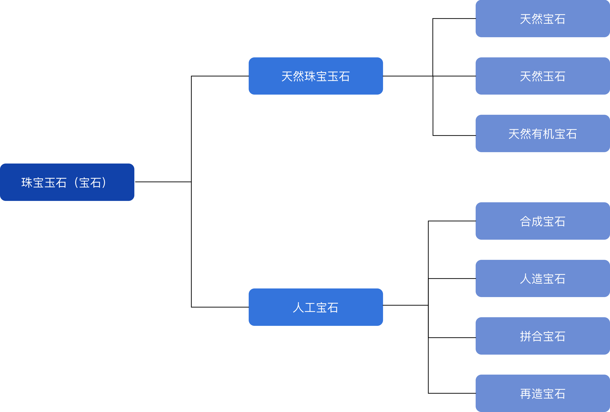

珠宝玉石的概念
珠宝玉石泛指一切经过琢磨、雕刻后可以成为首饰或工艺晶的材料，是对天然珠宝玉石和人工宝石的统称，简称宝石。
珠宝玉石的分类
美丽是宝石价值的首要条件。宝石的美由 颜色、透明度、光泽、纯度等众多因素构成。
宝石的颜色有彩色和无色之分
彩色宝石要求其颜色艳丽、纯正、均匀。对于无色宝石，颜色不是主要评价因素
无色宝石的透明度和纯净度是构成宝石美的主要因素
彩色宝石随不能达到清澈透明，然而较高的透明度可提高其总体质量
光泽是宝石表明反光的一种视觉效果。
有些宝石具有特殊的光学效应，例如星光效应、猫眼效应、变彩效应。
宝石需要具备一定的硬度、韧性和化学稳定性等。
宝石的耐久性由其稳定的物理化学性质决定的，但这一条件对某些宝石可以适当放宽，如有机宝石、大理岩等。
宝石以产出稀少而名贵。这种稀有性，包括品种上的稀有 和质量上的稀有。因品种稀有性而影响价格的例子可举紫晶。它半透明至透明，紫色、紫红色给人以高雅 之感，最初仅见于欧洲大陆，被人们视为珍宝，价值很高，但当在其他国家大量发现以后，价格大跌。
由于宝石本身的特殊性，国际上迄今为止还没有一个统一的方案。以下以我国珠宝首饰行业的国家标准对珠宝玉石的定义和分类为例。
在我国，分类的主要原则为：
以天然成因或者人工制造为依据，将宝石分为两大类，然后根据宝石的组成和性质进一步划分。
尽量采用目前国际上普遍使用的、趋于统一的分类原则进行分类。
我国现行珠宝玉石首饰行业的国家标准具体分类方案
|  |
| 图1 我国现行珠宝玉石首饰行业的国家标准具体分类方案示意图 |
定义
由自然界产出，具有美观、耐久、稀少性，具有工艺价值，可加工成饰品的物质。
分类
其按照组成和成因不同，可以划分为天然（单晶）宝石， 天然玉石和 天然有机宝石。